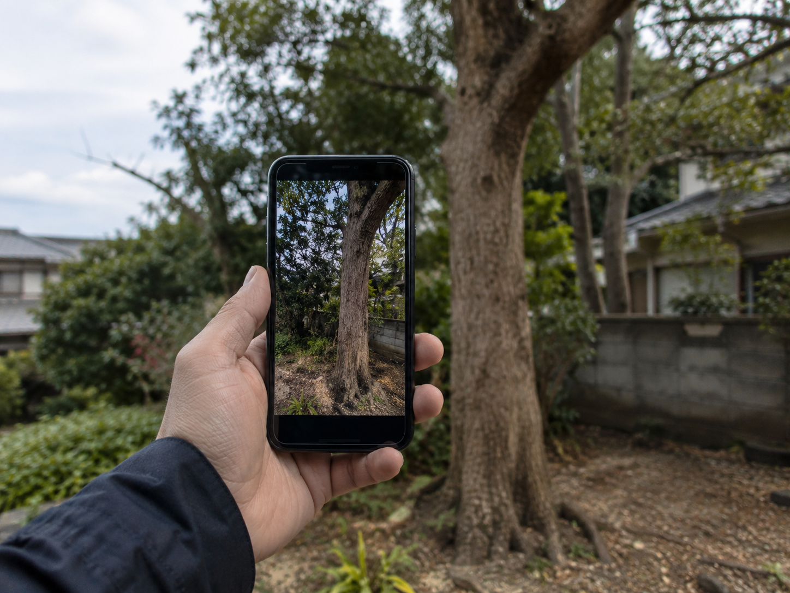
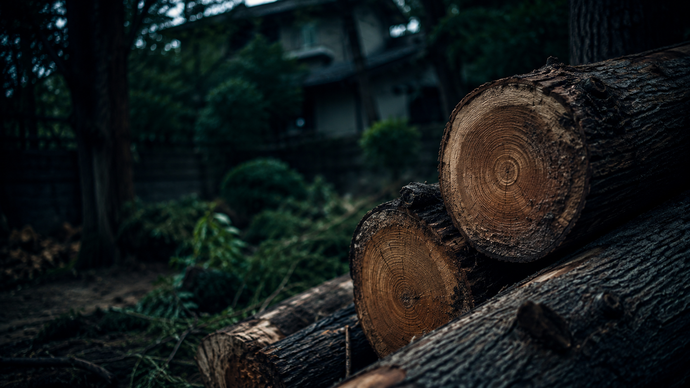
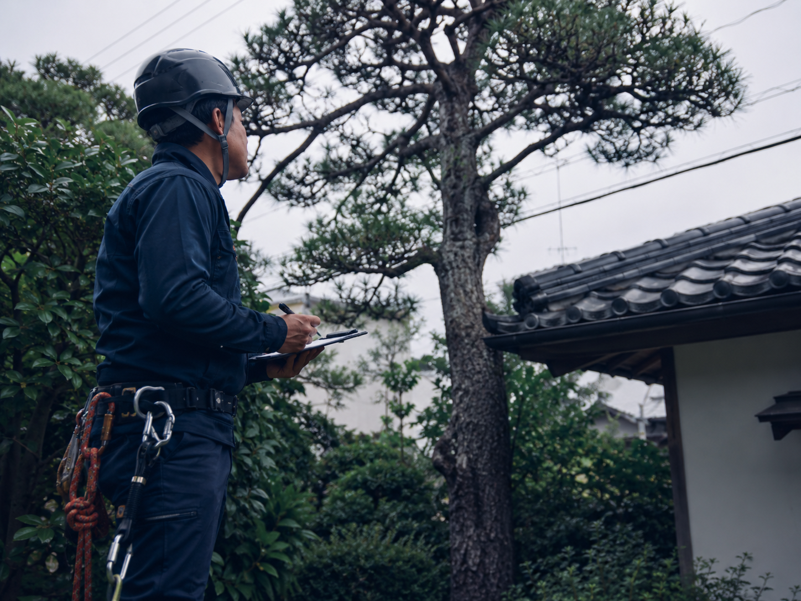
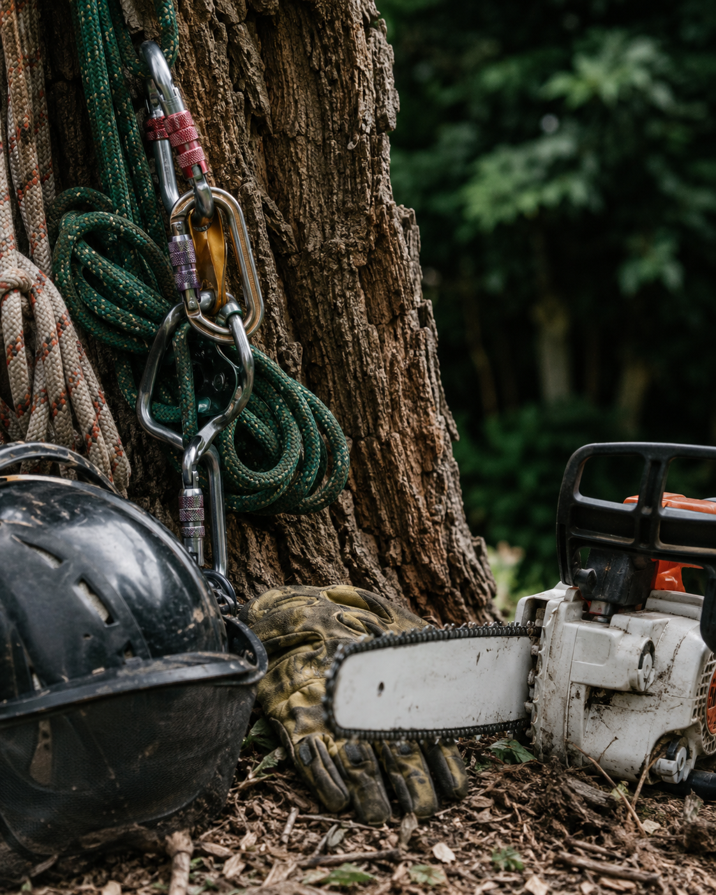
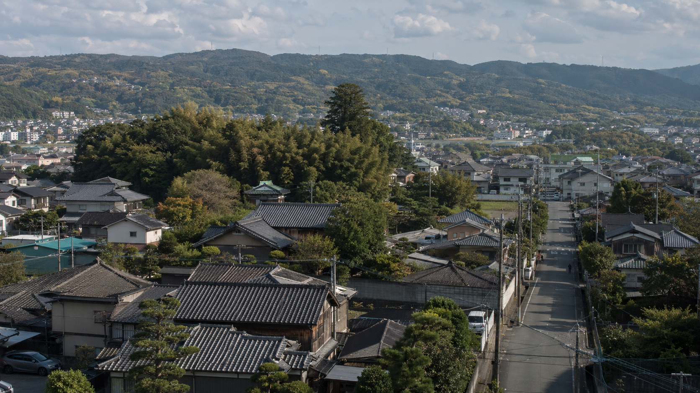
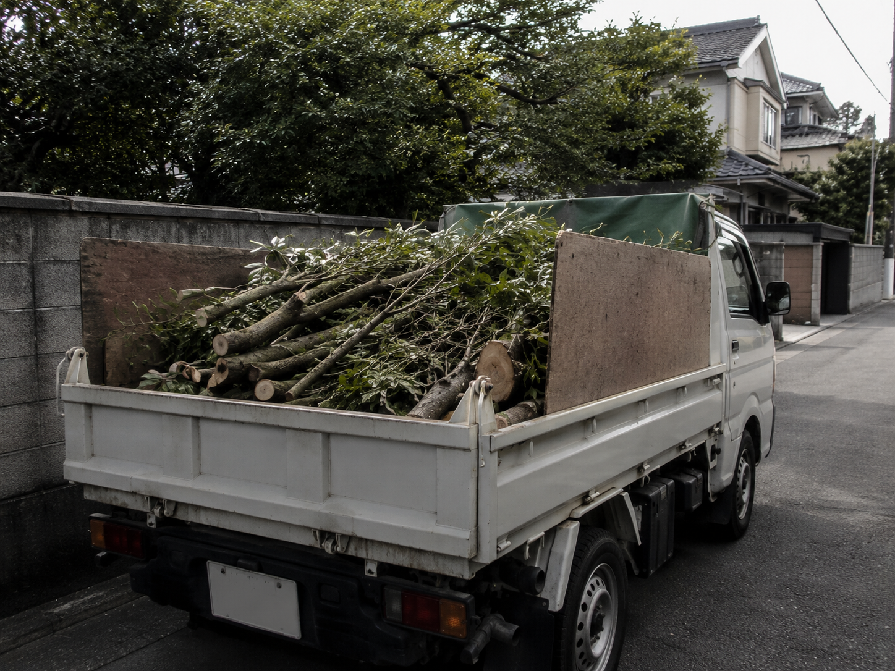
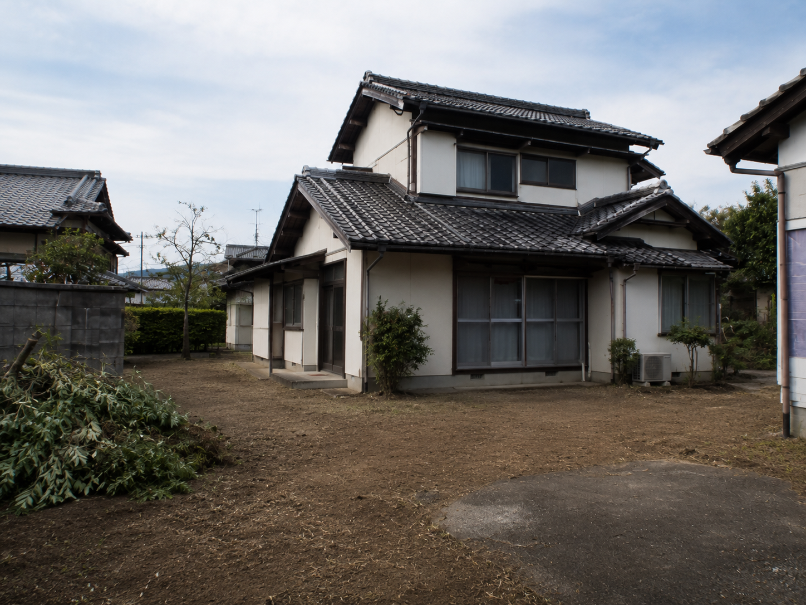

幹に割れや空洞がある
幹の強度や倒れる方向を確認する必要があります。
奈良市中心・奈良県内対応
倒れそうな木、枯れ木、傾いた木、台風前後に不安がある木は、早めの確認がおすすめです。写真から危険度と作業範囲を整理し、概算見積をお伝えします。
写真だけでもご相談いただけます。概算見積の確認だけでも問題ありません。
Risk Check
倒れそうな木、枯れ木、傾いた木、台風前後に不安がある木は、早めの確認がおすすめです。写真から危険度と作業範囲を整理し、概算見積をお伝えします。 危険木は、木の状態だけでなく、倒れた場合に何へ影響するかが重要です。屋根、塀、道路、隣家に近い木は、早めに写真で状況を確認することで、必要な対応を整理しやすくなります。
幹の強度や倒れる方向を確認する必要があります。
落枝につながることがあるため、上部の枝の状態も確認します。
根元と周辺の建物、道路、塀との位置関係を確認します。
強風前後の予防相談、倒木後の確認にも対応します。
Service Detail
危険木は、木の状態だけでなく、倒れた場合に何へ影響するかが重要です。屋根、塀、道路、隣家に近い木は、早めに写真で状況を確認することで、必要な対応を整理しやすくなります。
枯れ木、傾いた木、台風前後の倒木対策、屋根や塀に近い木を相談できます。倒木が心配な木は、まず写真を送って状況を確認してください。
写真相談から始められるため、現地にすぐ立ち会えない場合でも、木の状態や作業範囲を整理できます。しつこい営業は行いません。正式な料金は必要な確認を行ったうえでご案内します。
トップページへ戻るEasy Consultation
必要な確認だけを整理し、写真相談から無理なく進められる導線にしています。
木の全体、根元、周辺環境の写真から概算の確認ができます。
写真だけで判断しにくい場合に限り、現地確認をご案内します。
伐採後の枝葉や幹の搬出、処分量の確認まで相談できます。
Situation
現場条件に合わせて、作業範囲・搬出・近隣配慮を確認します。
折れやすい枝や幹の状態を確認します。
倒れる方向と周辺被害の可能性を見ます。
予防相談や倒木後の確認に対応します。
Flow
写真相談から作業完了まで、必要な確認を順番に進めます。

写真を送る木全体と周辺を共有写真だけのご相談も可能です。

概算見積費用目安を確認写真と相談内容をもとに概算をお伝えします。

現地確認必要な場合のみ確認判断しにくい現場だけご案内します。

正式見積作業範囲を明確化搬出・処分・安全対策まで確認します。

作業日調整近隣に配慮して調整車両や搬出経路を考慮します。
安全に配慮して進めます。

片付け・搬出枝葉や幹を整理作業後の片付けも相談できます。

完了確認仕上がりを確認作業範囲を確認して完了です。
写真だけのご相談も可能です。
しつこい営業は行いません。
必要な場合のみ現地確認をご案内します。
FAQ
奈良の危険木伐採でよくある不安をまとめました。
傾き、枯れ、根元の傷み、屋根や塀への近さがある場合は早めの確認をおすすめします。
木の全体、根元、建物や電線との距離、搬出経路が分かる写真があれば概算をお伝えしやすくなります。
問題ありません。概算の確認だけでもご相談いただけます。
搬出や処分も相談可能です。量や搬出経路により費用が変わります。
Related Pages
Estimate
奈良の危険木伐採でお困りでしたら、木の全体・根元・周辺状況が分かる写真をお送りください。概算見積の確認だけでも問題ありません。
メールでご相談の場合は、木の全体写真・根元付近・建物や電線との距離が分かる写真を添付していただくと、概算見積もりがスムーズです。
トップページへ戻る